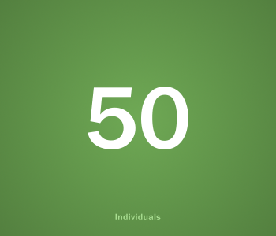

Settings
Disable Live Connector
The connection between your cameras and central systems will bo disabled

OCCUPATION
RESET
Current occupation
will bo set to "0"
OCCUPATION
RESET
Current occupation will be set to "0"